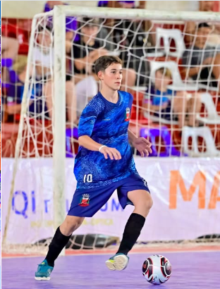

About us / Individual profile
Bruno Miguel B. Polla
An athlete, a Christian, and someone who loves sports and simple moments with family.
January 20, 2011
01 / Birth
A family memory
“My son, I am so proud of you! I see how dedicated you are on the court, how strong your faith is at church, and how much you value being here at home with us. You have a huge heart, you are focused, and you shine brightly.”
A family member's first-person account.
02 / School journey
The path so far
My school journey began at Gasparzinho daycare. I attended Getúlio Vargas School from first through fifth grade, then Gaspar Dutra School from sixth through eighth grade, and Vinícius de Moraes School from eighth through ninth grade. I currently study at IFPR in the Information Technology technical program.
03 / Date in history
January 20, 1961
On this date, John F. Kennedy was inaugurated as President of the United States. His inaugural address became known for its call to civic participation, summed up in the line “ask not what your country can do for you.” The event provides a historical connection to January 20.
04 / Today
Learning and competing
Today, I balance my studies at IFPR with sports. Futsal is one of my goals: I have played for a team connected with the greatest futsal player in the world, and I keep working to improve as an athlete.
05 / Looking ahead
Next steps
I want to keep growing in my studies and in futsal. I hope to use the Information Technology course to broaden my knowledge and keep working toward progress in sports.
Interests
What I enjoy
- Listening to music in my free time;
- Playing sports and futsal;
- Traveling and spending time with family.
Section video
Sports and personal journeys
The student-made video requested for this section still needs to be produced and published by the student.
Find futsal video references